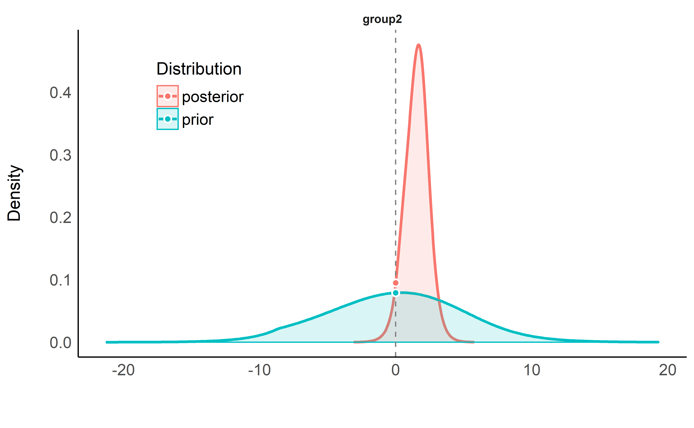
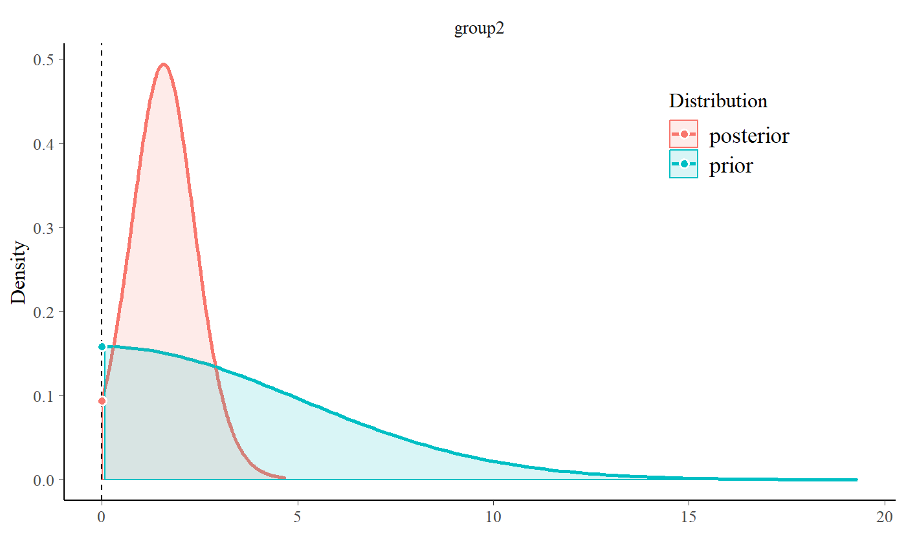
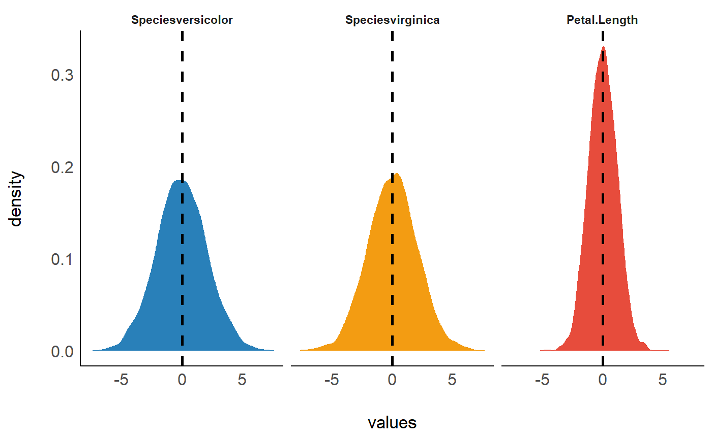

This vignette can be referred to by citing the package:
- Makowski, D., Ben-Shachar M. S. & Lüdecke, D. (2019). Understand and Describe Bayesian Models and Posterior Distributions using bayestestR. Available from https://github.com/easystats/bayestestR. DOI: 10.5281/zenodo.2556486.
The adoption of the Bayesian framework for applied statistics, especially in social or psychological sciences, seems to be developing in two distinct directions. One of the key topics marking their separation is their opinion about the Bayes factor. In short, some authors (e.g., the “Amsterdam school”, led by Wagenmakers) advocate its use and emphasize its qualities as a statistical index, while others point to its limits and prefer, instead, the precise description of posterior distributions (using CIs, ROPEs, etc.).
bayestestR does not take a side in this debate, rather offering tools to help you in whatever analysis you want to achieve. Instead, it strongly supports the notion of an informed choice: discover the methods, try them, understand them, learn about them, and decide for yourself.
Having said that, here’s an introduction to Bayes factors :)
Bayes Factors
Bayes factors (BFs) are indices of relative evidence of one “model” over another, which can be used in the Bayesian framework as alternatives to classical (frequentist) hypothesis testing indices (such as \(p-values\)).
According to Bayes’ theorem:
\[ P(M|D) = \frac{P(D|M)\times P(M)}{P(D)} \] Then by comparing two models, we get:
\[ \frac{P(M_1|D)}{P(M_2|D)} = \frac{P(D|M_1)}{P(D|M_2)} \times \frac{P(M_1)}{P(M_2)} \] Where the middle term is the Bayes factor: \[ BF_{12}=\frac{P(D|M_1)}{P(D|M_2)} \] Thus, Bayes factors can be seen either as a ratio quantifying the relative likelihood of two models in light of some observed data as they can be computed by comparing marginal likelihoods, or as the degree by which some prior beliefs about the relative odds of two models are to be updated as they can be computed by dividing posterior odds by prior odds, as we will soon demonstrate.
Here we provide functions for computing Bayes factors in two different applications: testing single parameters (coefficients) within a model and comparing statistical models themselves.
Testing Models’ Parameters with Bayes Factors
A Bayes factor for a single parameter can be used to answer the question:
Given the observed data, is the null hypothesis of an absence of an effect more, or less likely?

Bayesian analysis of the Students’ (1908) Sleep data set.
Let’s use the Students’ (1908) Sleep data set (data("sleep")), in which people took some drug and where the researchers measured the extra hours of sleep that they slept afterwards. We will try answering the following question: given the observed data, how likely it is that the drug (the variable group) has no effect on the numbers of hours of extra sleep (variable extra)?

The bloxplot suggests that the 2nd group has a higher number of hours of extra sleep. By how much? Let’s fit a simple Bayesian linear model.
Testing against a Null-Region
One way of operationlizing the null-hypothesis is by setting a null region (for example the \([-0.1, 0.1]\) interval), such that an effect that falls within this interval would be practically equivalent to the the null. In our case, that means defining a region where we would consider the drug having no effect at all. We can then compute the prior probability of the drug’s effect falling within this null-region, and the prior probability of the drug’s effect falling outside the null-region to get our prior odds. Say any effect smaller than half an hour of extra sleep is practically equivalent to being no effect at all, we would define our prior odds as:
\[ \frac {P(b_{drug} \in [-0.5, 0.5])} {P(b_{drug} \notin [-0.5, 0.5])} \]
If we set our prior to have a normal distribution centered at 0 hours with a scale (an SD) of 2.5 hours, our prior would look like this:

The prior odds would be 5.3.
We can now fit our model:
By looking at the posterior distribution, can now compute the posterior probability of the drug’s effect falling within the null-region, and the posterior probability of the drug’s effect falling outside the null-region to get our posterior odds:
\[ \frac {P(b_{drug} \in [-0.5,0.5] | Data)} {P(b_{drug} \notin [-0.5,0.5] | Data)} \]

We can see that the centre of the posterior distribution has shifted away from 0 (to ~1.6). Likewise, the posterior odds are 3.3 - which seems to favour the effect being non-null, but… does this mean the data support the alternative more than the null? Hard to say, since even before the data were observed, the priors already favoured the alternative - so we need to take our priors into account here!
Let’s compute the Bayes factor as the change from the prior odds to the posterior odds: \(BF_{10} = Odds_{posterior} / Odds_{prior} = 0.6\)! This BF indicates that the data provide 1/0.6 = 1.6 times more evidence for the effect of the drug being practically nothing than it does for the drug having some clinically significant effect. Alternatively, we can say that the observed data are 1.63 times more probable if effect of the drug was within the null interval than if it was outside of it! Thus, although the center of distribution has shifted away from 0, and the posterior favors the non-null values, it seems that given the observed data, the probability mass has overall shifted closer to the null interval, making the values in the null interval more probable! (see Non-overlapping Hypotheses in Morey & Rouder, 2011)
Note that interpretation guides for Bayes factors can be found here.
All of this can be achieved with the function bayesfactor_parameters(), which gives a Bayes factor for each of the model’s parameters:
> # Bayes Factor (Null-Interval)
>
> Parameter Bayes Factor
> (Intercept) 0.04
> group2 0.61
>
> * Evidence Against The Null: [-0.5, 0.5]
Testing against the null as a single point (0)
What if we don’t know what region would be practically equivalent to 0? Or if we just want the null to be exactly zero? Not a problem - as the width of null region shrinks to zero, the change from the prior and posterior probability of the null - no longer an interval, but now a point-null - can be estimated by comparing the the density of the null value between the two distributions.1 This ratio is called the Savage-Dickey ratio, and has the added benefit of also being an approximation of a Bayes factor comparing the estimated model against the a model in which the parameter of interest has been restricted to a point-null:
“[…] the Bayes factor for \(H_0\) versus \(H_1\) could be obtained by analytically integrating out the model parameter \(\theta\). However, the Bayes factor may likewise be obtained by only considering \(H_1\), and dividing the height of the posterior for \(\theta\) by the height of the prior for \(\theta\), at the point of interest.” (Wagenmakers, Lodewyckx, Kuriyal, & Grasman, 2010)
> # Bayes Factor (Savage-Dickey density ratio)
>
> Parameter Bayes Factor
> (Intercept) 0.07
> group2 0.82
>
> * Evidence Against The Null: [0]
By default, null is set to 0, resulting in the computation of a Savage-Dickey ratio.
One-Sided Tests
We can also conduct a directional test (a “one sided” or “one tailed” test) if we have a prior hypotheses about the direction of the effect. This is done by setting an order restriction on the prior and posterior distributions of the alternative (Morey & Wagenmakers, 2014). For example, if we have a prior hypothesis that the effect of the drug is positive, the alternative will be restricted to the region to the right of the null (point or interval):

> # Bayes Factor (Savage-Dickey density ratio)
>
> Parameter Bayes Factor
> (Intercept) 0.12
> group2 1.54
>
> * Evidence Against The Null: [0]
> * Direction: Right-Sided testAs we can see, given that we have an a priori assumption about the direction of the effect (that the effect is positive), the presence of an effect is 1.5 times more likely than the absence of an effect, given the observed data (or that the data are 1.5 time more probable under \(H_1\) than \(H_0\)). This indicates that, given the observed data, and a priori hypothesis, the posterior mass has shifted away from the null value, giving some evidence against the null (note that a Bayes factor of 1.5 is still considered quite weak evidence).
Testing Contrasts (with emmeans)
We can also use bayesfactor_parameters() together with emmeans, allowing us to test Bayesian contrasts.
> contrast estimate lower.HPD upper.HPD
> 1 - 2 -1.57 -3.3 0.187
>
> HPD interval probability: 0.95> Computation of Bayes factors: sampling priors, please wait...> # Bayes Factor (Savage-Dickey density ratio)
>
> Parameter Bayes Factor
> 1 - 2 0.9
>
> * Evidence Against The Null: [0]Comparing Models using Bayes Factors
Bayes factors can also be used to compare statistical models, for which they answer the question:
Under which model are the the observed data more probable?
In other words, which model is more likely to have produced the observed data? This is usually done by comparing the marginal likelihoods of two models. In such a case, the Bayes factor is a measure of the relative evidence of one of the compared models over the other.
Let’s use Bayes factors for model comparison to find a model that best describes the length of an iris’ sepal using the iris data set.
For Bayesian models (brms and rstanarm)
Note: In order to compute Bayes factors for models, non-default arguments must be added upon fitting:
-
brmsfitmodels must have been fitted withsave_all_pars = TRUE -
stanregmodels must have been fitted with a defineddiagnostic_file.
Let’s first fit 5 Bayesian regressions with brms to predict Sepal.Length:
library(brms)
m0 <- brm(Sepal.Length ~ 1, # intercept only model
data = iris, save_all_pars = TRUE)
m1 <- brm(Sepal.Length ~ Petal.Length,
data = iris, save_all_pars = TRUE)
m2 <- brm(Sepal.Length ~ Species,
data = iris, save_all_pars = TRUE)
m3 <- brm(Sepal.Length ~ Species + Petal.Length,
data = iris, save_all_pars = TRUE)
m4 <- brm(Sepal.Length ~ Species * Petal.Length,
data = iris, save_all_pars = TRUE)We can now compare these models with the bayesfactor_models() function, using the denominator argument to specify which model all models will be compared against (in this case, the intercept-only model):
> # Bayes Factors for Model Comparison
>
> Model Bayes Factor
> [1] Petal.Length 3.45e+44
> [2] Species 5.63e+29
> [3] Species + Petal.Length 7.12e+55
> [4] Species * Petal.Length 9.15e+55
>
> * Against Denominator: [5] (Intercept only)
> * Bayes Factor Type: marginal likelihoods (bridgesampling)We can see that the full model is the best model - with \(BF_{\text{m0}}=9\times 10^{55}\) compared to the null (intercept only).
Due to the transitive property of Bayes factors, we can easily change the reference model to the main effects model:
> # Bayes Factors for Model Comparison
>
> Model Bayes Factor
> [1] Petal.Length 4.84e-12
> [2] Species 7.90e-27
> [4] Species * Petal.Length 1.28
> [5] (Intercept only) 1.40e-56
>
> * Against Denominator: [3] Species + Petal.Length
> * Bayes Factor Type: marginal likelihoods (bridgesampling)As we can see, though the full model is the best, there is hardly any evidence that it is preferable to the main effects model.
We can also change the reference model to the Species model:
> # Bayes Factors for Model Comparison
>
> Model Bayes Factor
> [1] Petal.Length 6.12e+14
> [3] Species + Petal.Length 1.27e+26
> [4] Species * Petal.Length 1.63e+26
> [5] (Intercept only) 1.78e-30
>
> * Against Denominator: [2] Species
> * Bayes Factor Type: marginal likelihoods (bridgesampling)Notice that in the Bayesian framework the compared models do not need to be nested models, as happened here when we compared the Petal.Length-only model to the Species-only model (something that cannot be done in the frequentists framework, where compared models must be nested in one another).
NOTE: In order to correctly and precisely estimate Bayes Factors, you always need the 4 P’s: Proper Priors,2 and a Plentiful Posterior.3
For Frequentist models via the BIC approximation
It is also possible to compute Bayes factors for frequentist models. This is done by comparing BIC measures, allowing a Bayesian comparison of non-nested frequentist models (Wagenmakers, 2007). Let’s try it out on some linear mixed models:
library(lme4)
m0 <- lmer(Sepal.Length ~ (1 | Species), data = iris)
m1 <- lmer(Sepal.Length ~ Petal.Length + (1 | Species), data = iris)
m2 <- lmer(Sepal.Length ~ Petal.Length + (Petal.Length | Species), data = iris)
m3 <- lmer(Sepal.Length ~ Petal.Length + Petal.Width + (Petal.Length | Species), data = iris)
m4 <- lmer(Sepal.Length ~ Petal.Length * Petal.Width + (Petal.Length | Species), data = iris)
bayesfactor_models(m1, m2, m3, m4, denominator = m0)> # Bayes Factors for Model Comparison
>
> Model Bayes Factor
> [1] Petal.Length + (1 | Species) 8.24e+24
> [2] Petal.Length + (Petal.Length | Species) 4.77e+23
> [3] Petal.Length + Petal.Width + (Petal.Length | Species) 1.52e+22
> [4] Petal.Length * Petal.Width + (Petal.Length | Species) 5.93e+20
>
> * Against Denominator: [5] 1 + (1 | Species)
> * Bayes Factor Type: BIC approximationInclusion Bayes factors via Bayesian model averaging
Inclusion Bayes factors answer the question:
Are the observed data more probable under models with a particular predictor, than they are under models without that particular predictor?
In other words, on average - are models with predictor \(X\) more likely to have produce the observed data than models without predictor \(X\)?4
Since each model has a prior probability, it is possible to sum the prior probability of all models that include a predictor of interest (the prior inclusion probability), and of all models that do not include that predictor (the prior exclusion probability). After the data are observed, we can similarly consider the sums of the posterior models’ probabilities to obtain the posterior inclusion probability and the posterior exclusion probability. Again, the change from prior to posterior inclusion odds is the Inclusion Bayes factor (“\(BF_{Inclusion}\)”; Clyde, Ghosh, & Littman, 2011).
Lets use the brms example from above:
> # Inclusion Bayes Factors (Model Averaged)
>
> Pr(prior) Pr(posterior) Inclusion BF
> Petal.Length 0.6 1.00 1.93e+26
> Species 0.6 1.00 3.15e+11
> Species:Petal.Length 0.2 0.56 5.14
>
> * Compared among: all models
> * Priors odds: uniform-equalIf we examine the interaction term’s inclusion Bayes factor, we can see that across all 5 models, a model with the interaction term (Species:Petal.Length) is 5 times more likely than a model without the interaction term. Note that Species, a factor represented in the model with several parameters, gets a single Bayes factor - inclusion Bayes factors are given per predictor!
We can also compare only matched models - such that averaging is done only across models that (1) do not include any interactions with the predictor of interest; (2) for interaction predictors, averaging is done only across models that contain the main effect from which the interaction predictor is comprised (see explanation for why you might want to do this here).
> # Inclusion Bayes Factors (Model Averaged)
>
> Pr(prior) Pr(posterior) Inclusion BF
> Petal.Length 0.4 0.44 1.27e+26
> Species 0.4 0.44 2.07e+11
> Species:Petal.Length 0.2 0.56 1.28
>
> * Compared among: matched models only
> * Priors odds: uniform-equalComparison with the JASP software
bayesfactor_inclusion() is meant to provide Bayes Factors per predictor, similar to JASP’s Effects option. Let’s compare the two:
- Across all models:
library(BayesFactor)
ToothGrowth$dose <- as.factor(ToothGrowth$dose)
BF_ToothGrowth <- anovaBF(len ~ dose*supp, ToothGrowth)
bayesfactor_inclusion(BF_ToothGrowth)> # Inclusion Bayes Factors (Model Averaged)
>
> Pr(prior) Pr(posterior) Inclusion BF
> supp 0.6 1.00 140.37
> dose 0.6 1.00 3.20e+14
> supp:dose 0.2 0.72 10.4
>
> * Compared among: all models
> * Priors odds: uniform-equal
- Across matched models:
> # Inclusion Bayes Factors (Model Averaged)
>
> Pr(prior) Pr(posterior) Inclusion BF
> supp 0.4 0.27 57.77
> dose 0.4 0.28 1.33e+14
> supp:dose 0.2 0.72 2.64
>
> * Compared among: matched models only
> * Priors odds: uniform-equal
- With Nuisance Effects:
We’ll add dose to the null model in JASP, and do the same in R:
BF_ToothGrowth_against_dose <- BF_ToothGrowth[3:4]/BF_ToothGrowth[2] # OR:
# update(bayesfactor_models(BF_ToothGrowth),
# subset = c(4, 5),
# reference = 3)
BF_ToothGrowth_against_dose> Bayes factor analysis
> --------------
> [1] supp + dose : 58 ±3.6%
> [2] supp + dose + supp:dose : 153 ±1.2%
>
> Against denominator:
> len ~ dose
> ---
> Bayes factor type: BFlinearModel, JZS> # Inclusion Bayes Factors (Model Averaged)
>
> Pr(prior) Pr(posterior) Inclusion BF
> dose 1.00 1.00 NaN
> supp 0.67 1.00 105.27
> supp:dose 0.33 0.72 5.2
>
> * Compared among: all models
> * Priors odds: uniform-equal
Order Restricted Models
Consider the following model, in which we predict the length of an iris’ sepal from the length of its petal, as well as from its species. 
What are our priors (here, rstanarm’s default priors) for this model’s parameters? They all take the shape of some normal distribution centered at 0:

These priors are unrestricted - that is, all of the model’s parameter have some non-zero probability (no matter how small) of being any of the values between \(-\infty\) and \(\infty\) (this is true for both the prior and posterior distribution). Subsequently, a priori the ordering of the parameters relating to the iris species can have any ordering, such that (a priori) setosa can have larger sepals than virginica, but it is also possible for virginica to have larger sepals than setosa!
Does it make sense to let our priors cover all of these possibilities? That depends on our prior knowledge or assumptions. For example, even a novice botanist will assume that it is unlikely that petal length will be negatively associated with sepal length - an iris with longer petals is likely larger, and thus will also have a longer sepal. And an expert botanist will perhaps assume that setosas have smaller sepals than both versicolors and virginica. All of these prior assumptions can be formulated as order restrictions (Morey, 2015; Morey & Rouder, 2011):
- The novice botanist: \(b_{petal} > 0\)
- The expert botanist: \(b_{versicolors} > 0\ \&\ b_{virginica} > 0\)
By testing these restrictions on prior and posterior samples, we can see how the probability of the restrictions changes after observing the data. This can be achieved with bayesfactor_restricted(), that compute a Bayes factor for these restricted model vs the unrestricted model. Let’s first specify these restrictions as logical conditions:
Let’s test these hypotheses:
> Computation of Bayes factors: sampling priors, please wait...> # Bayes Factor (Order-Restriction)
>
> Hypothesis P(Prior) P(Posterior)
> Petal.Length > 0 0.51 1
> (Speciesversicolor > 0) & (Speciesvirginica > 0) 0.25 0
> Bayes Factor
> 1.97
> 0.00e+00
>
> * Bayes factors for the restricted movel vs. the un-restricted model.We can see that the novice botanist’s hypothesis gets a Bayes factor of ~2, indicating the data provides twice as much evidence for a model in which petal length is restricted to be positively associated with sepal length than for a model with not such restriction.
What about our expert botanist? He seems to have failed miserably, with a BF favoring the unrestricted model many many times over (\(BF\gg1,000\)). How is this possible? It seems that when controlling for petal length, versicolor and virginica actually have shorter sepals!
Note that these Bayes factors compare the restricted model to the unrestricted model. If we wanted to compare the restricted model to the null model, we could use the transitive property of Bayes factors like so:
\[ BF_{restricted / NULL} = \frac {BF_{restricted / un-restricted}} {BF_{un-restricted / NULL}} \] > NOTE: Because these restrictions are on the prior distribution, they are only appropriate for testing pre-planned (a priori) hypotheses, and should not be used for any post hoc comparisons (Morey, 2015).
References
Clyde, M. A., Ghosh, J., & Littman, M. L. (2011). Bayesian adaptive sampling for variable selection and model averaging. Journal of Computational and Graphical Statistics, 20(1), 80–101.
Morey, R. D. (2015). Multiple comparisons with bayesfactor, part 2 – order restrictions. Retrieved from https://richarddmorey.org/category/order-restrictions/
Morey, R. D., & Rouder, J. N. (2011). Bayes factor approaches for testing interval null hypotheses. Psychological Methods, 16(4), 406.
Morey, R. D., & Wagenmakers, E.-J. (2014). Simple relation between bayesian order-restricted and point-null hypothesis tests. Statistics & Probability Letters, 92, 121–124.
Wagenmakers, E.-J. (2007). A practical solution to the pervasive problems ofp values. Psychonomic Bulletin & Review, 14(5), 779–804.
Wagenmakers, E.-J., Lodewyckx, T., Kuriyal, H., & Grasman, R. (2010). Bayesian hypothesis testing for psychologists: A tutorial on the savage–dickey method. Cognitive Psychology, 60(3), 158–189.
Note that as the width of null interval shrinks to zero, the prior and posterior probability of the alternative tends towards 1.00.↩
Robert, 2016; Kass & Raftery, 1993; Fernández, Ley, & Steel, 2001↩
A model without predictor \(X\) can be thought of as a model in which the parameter(s) of the predictor have been restricted to a null-point of 0.↩